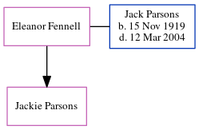

Eleanor Fennell, the wife of Jack Melville Parsons (the fourth cousin once-removed on the father's side of Nigel Horne), and married Jack (with whom she had 1 child, Jackie) on Aug 1, 1952.
Family Tree

Generated by ged2site. Last updated on Jun 11, 2024